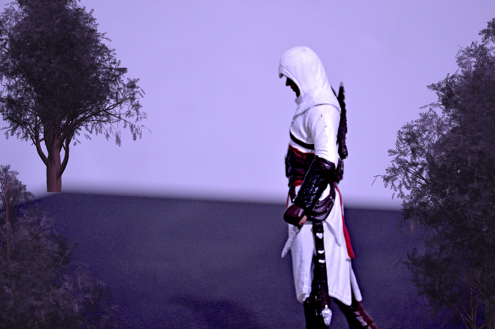

Elektro Festival von Synaptic
Plakate, eine Eintrittskarte und ein Motiv für ein weißes Tshirt
finden Sie hier für das fiktive ELEKTRO Festival.
Alles entstanden im Rahmen eines selbstständigen Projektes.
Assassin's Creed Movie Poster
“Where other men blindly follow the truth, Remember, nothing is true.
Where other men are limited by morality or law, Remember, everything is permitted.
We work in the dark to serve the light.
We are assassins.”

Did somebody asked for more Assassin's Creed?
"From now, his life was forged for one purpose and one purpose alone- revenge.”
Parallaxe. Manchmal etwas schwer zu erschaffen aber schön zum anschauen. :D